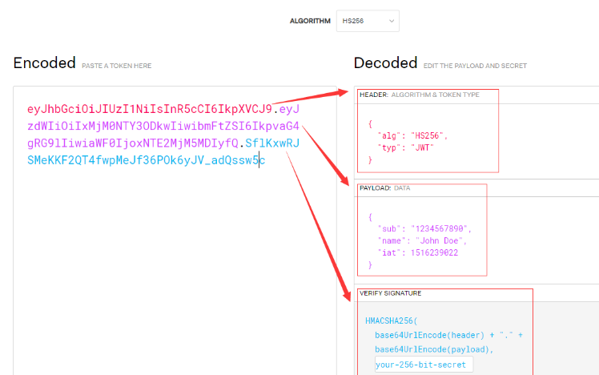

Rest API的认证模式
微服务系统中，很多团队采用了API驱动设计开发，服务之间的调用都通过API来实现的。为了统一管理API，一般都会在前面部署一个API Gateway，然后由API Gateway对API的调用者进行权限认证。 常见的认证方式有下面几种：
- AppKey
- AppKey + Secret
- JWT
- OAuth
下面我们逐一来介绍这些App的认证方式，以及对应的使用场景.
AppKey
AppKey 是比较悠久，也是比较简单但是蛮有效的一种方式方法。当Application申请访问API后，API Gateway会为这个Application生成一个AppKey，一般是UUID等随机无意义的字符串。当Application调用API的时候，需要在Http Header或者是Query里面带上这个AppKey， 然后API Gateway进行校验，验证无误后方可访问到具体的API。 比如
GET http://api.example.com/users?AppKey=1234567890abcdef
或者是在header里面：
GET http://api.example.com/users
x-app-key=1234567890abcdef
不建议放在Query里面，这样很容易就被爆出来，因为即使是HTTPS连接，URL也是不会加密的。同时建议用RFC7235关于HTTP认证部分的标准，以Authorization header的方式进行连接：
GET http://api.example.com/users?AppKey=1234567890abcdef
Authorization: AppKey 1234567890abcdef
小结：AppKey简单明了，带着key直接就可以走了！如果只是为了能识别API的调用者，同时进行一些常规的API Gateway逻辑，AppKey也就够了。其实微软Azure API Management里面的subscription 就是直接用AppKey作为Header进行访问的。
AppKey + Secret
我们知道Hash算法可以能够完成密码学四大目标之一的完整性检验，但是不能避免消息被篡改：比如有人将内容以及Hash一起给改掉。为了避免消息被篡改，伟大的前人设计出消息验证码(Message Authentication Code), 在计算hash的时候，同时在里面加入密钥，得出基于Hash的消息验证码，常见的有HMAC (Hash-based Message Authentication Code).
现在我们要介绍的这种API的认证方式同时带上AppKey以及消息验证码的。当Application申请访问API后，API Gateway会为这个Application生成一对Key, 一个叫AppKey，另一个叫App Secret。 API Gateway保存这对Key/Secret. 当Application发起请求时，首先是在header带上这个AppKey，然后按照API Gateway的要求，对请求的URL, body, header等消息进行HMAC运算，并作为HTTP Header发送，最终发给服务器的内容大致如下：
POST ttp://api.example.com/users
Authorization: AppKey 1234567890abcdef
X-Ca-Signature: HMAC(HTTP Method+Headers+Body)
Body content
当API Gateway收到这个请求之后，它会取出这个AppKey对应的AppSecret，然后以相同的算法对请求的内容进行HMAC运算，将得出的摘要跟发过来的摘要比较。这里的摘要也有些地方叫 签名。
小结：这种方式虽然稍微复杂了点，但同时把身份确认以及消息不被篡改的要求都满足了。阿里云API Gateway的subscription就是采用这种方式。
JWT
如果AppKey泄露或者被截取，窃取方在Application发现AppKey泄露之前，是可以用Application的不受限地进行API的调用。那怎样才能最低程度地减少AppKey丢失之后的风险呢? 比如有效期缩短？
Json Web Token(缩写JWT) 是目前比较流行的跨域身份认证解决方案。以令牌的方式进行沟通，而令牌自身带着身份信息，并且具有时效性，过期无效。所以我们可以采用JWT来减少AppKey丢失之后的风险。
一个JWT包括3个部分：头部（算法以及类型），Payload(具体的内容，主要是有效时间，名字等) 以及签名。格式为 aaaa.bbbbb.cccc. 每一部分的内容都用Base64编码进行表示。

- 首先Application在API Gateway注册的时候，API Gateway会返回一对ID/Secret。
- 在Application调用API之前，先带上ID、Secret去调用API Gateway的Token接口，API Gateway 返回令牌
- Application 把token放在Authorization header里面，去请求API
- API Gateway验证JWT是否过期，签名是否合法，以及Payload里面的信息，如果合法就允许继续访问
如果Token别人截取了，那么窃取方只能在token过期之前这个时间段内 假扮成Application去调用API。
小结：JWT会使得口令丢失的损失减低一些，同时payload里面可以带更多的有用的信息（当然标准规范里面的payload也没有多少可定制的字段），可以进行一些相应的权限或者业务操作。
OAuth
OAuth是一个可以为第三方应用访问用户资源的安全框架。OAuth有4种不同的认证授权：
- 授权码模式 - Authorization Code
- 客户端凭据 - Client Credentials
- 密码模式 - Password
- 隐式授权 - Implicit
授权码模式跟隐式授权模式都是在有用户的场景下使用 （隐式授权模式没有授权码，而是直接获得access token），而密码模式则是直接要用户输入用户名密码的，一般都不用。客户端凭据 Client Credential 这种方式可以用来作为API 的认证授权。
具体的操作流程跟JWT的方式下类似：
- 首先Application在API Gateway注册的时候，API Gateway会返回一对client Id / Secret。
- 在Application调用API之前，先带上client Id / Secret去调用API Gateway的Access Token接口，API Gateway 返回Access Token.
-
Application 把Access Token放在header里面，
Authorization: Bearer ACCESS_TOKEN去请求API -
API Gateway验证Access Token是否过期，签名是否合法，解开payload，检查是否该令牌是否有权限访问该资源，如果验证通过 则允许继续访问
小结： API Gateway 的龙头老大Google Apigee就是采用OAuth Client Credentials的方式进行Application的认证授权的，微软Azure的API Management除了上面说的subscription的方式，也支持了AAD OAuth的方式，不过过程比较繁琐。如果API Gateway除了需要身份认证之外，还需要进行权限的校验，那么以JWT作为Access Token的OAuth是一种值得一试的方案。